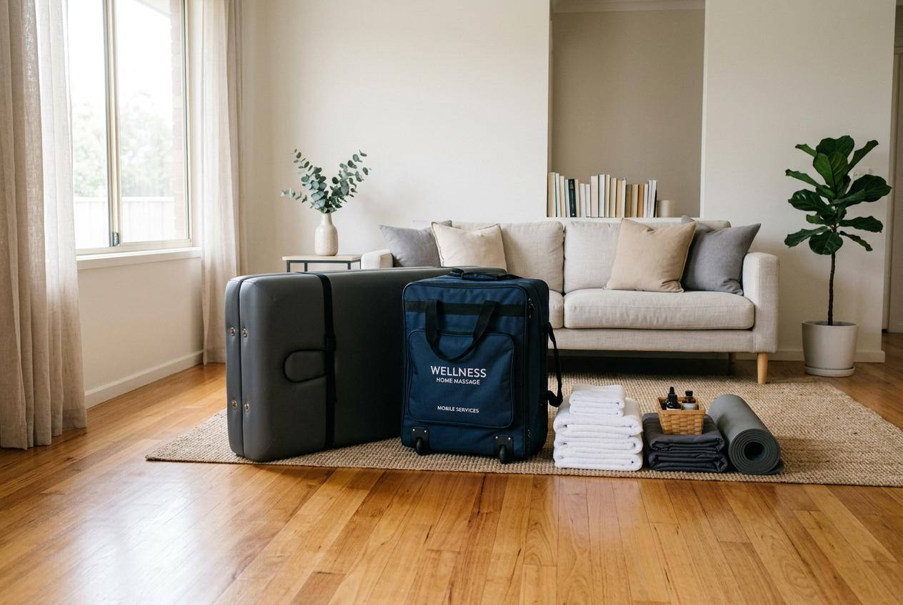

在台北這座節奏緊湊的城市裡，許多人下班後常感到肩頸僵硬、腰背痠痛，想找方式好好放鬆。台北男士按摩的需求持續存在，但很多人對服務內容、流程安排與預約方式並不熟悉。本文整理4個重點，帶你快速掌握從預約到服務完成的完整須知。
為什麼男士會選擇按摩服務？
許多男性平日工作節奏快，長時間坐在辦公桌前或使用體力勞動，身體累積疲勞是常態。加上加班頻繁、運動時間少，肌肉緊繃的情況愈發常見。按摩能幫助身體從緊繃狀態回到放鬆，成為不少人下班後的選擇。
相較於女性，男性較少主動尋求協助，但近年觀念改變，許多人開始重視身體保養，願意撥出時間調整狀態。這也是針對男性的按摩服務日漸多元的原因。
台北男士按摩常見服務項目
在預約之前，先了解常見的服務項目能幫助你選擇適合自己的方案。以下列出4個常見項目：
- 全身按摩：針對全身主要肌群進行放鬆，適合累積一整週疲勞的人。
- 肩頸背部調理：專注在上半身，針對久坐辦公族設計，時間較短、費用也較親民。
- 腿部與足部放鬆：適合長時間站立或走路的人，幫助下肢循環。
- 到府按摩服務：無需出門，按摩師攜帶設備至指定地點，適合時間有限或偏好安靜環境的人。
台北男士按摩服務流程怎麼安排？
了解流程能讓你預約時更有方向，也能減少初次體驗的緊張感。以下是常見的5步預約流程：
- 選擇服務項目與時段：先確認自己需要的服務類型與可配合的時間，部分熱門時段需提前預約。
- 確認價格與方案內容：透過官方網站或電話詢問，了解價格是否包含交通費、材料費等細節。
- 提供基本資訊：預約時需提供姓名、聯絡電話與地址（到府服務），部分店家會確認健康狀況。
- 等待服務當日：到府服務需確保空間有足夠面積擺放按摩床；門市服務則建議提前10分鐘抵達。
- 服務完成與後續：按摩結束後可詢問保養建議，部分店家提供後續追蹤或優惠方案。
台北男士按摩價格通常怎麼看？
價格會依據服務項目、時間長度與地點有所差異。一般來說，全身按摩的價格高於局部調理，到府服務則會額外收取車馬費。建議預約前主動詢問完整報價，避免現場產生誤會。
以下整理4個重點對照表，幫助你在比價時掌握關鍵：
| 比較項目 | 重點說明 |
|---|---|
| 預約方式 | 電話與線上預約是主流，部分店家支援即時通訊軟體。確認預約後建議保留截圖或簡訊紀錄。 |
| 服務項目完整性 | 同一價位下，服務內容可能差異甚大。仔細比對時間長度、涵蓋部位與使用產品。 |
| 價格區間 | 局部調理約60至90分鐘；全身按摩約90至120分鐘。到府服務另加車馬費，跨區可能更高。 |
| 服務後注意事項 | 按摩後建議補充水分、避免立即劇烈運動。如有不適應立即停止並告知服務人員。 |

台北男士按摩推薦怎麼選？
選擇按摩服務時，可從以下面向評估：營業資訊是否完整、服務項目描述是否明確、網路評價如何，以及預約能否配合你的作息時間。
不要只看價格高低，服務品質與專業程度才是長期選擇的關鍵。初次體驗建議從短時數方案開始，確認符合需求後再考慮較長套組。
到府按摩與門市按摩有什麼差別？
到府按摩優點是節省交通時間，結束後可直接休息。但需準備足夠空間，且部分大廈訪客管理較嚴格，需提前確認。門市按摩環境專業、設備齊全，適合喜歡儀式感的人。
兩種方式各有適合的族群，下班後若已相當疲憊不想多移動，到府服務是較省力的選擇；若重視環境氛圍與專業設備，門市體驗會更完整。
預約前需要注意哪些事項？
為了讓服務順利進行，預約前請確認以下幾點：
- 確認自身健康狀況，如有皮膚感染、發炎或嚴重骨骼問題，應先諮詢專業意見。
- 按摩前避免空腹或過飽，建議餐後1至2小時再進行。
- 告知服務人員你的身體狀況與偏好，例如特別酸的部位或希望避開的區域。
- 準備寬鬆衣物，方便按摩後更換。
- 保留預約憑證，以便日後查詢或調整時間。
選擇按摩服務的重點整理
台北男士按摩的選擇相當多元，從門市到到府服務、從局部調理到全身放鬆，每種方案都有適合的族群。建議先釐清自己的需求與預算，再透過預約流程逐步確認細節。
無論選擇哪種方式，事前了解服務內容、比較價格區間與確認注意事項，都是確保良好體驗的重要步驟。金手指按摩提供專業的到府按摩服務，若你希望在家中享受放鬆時光，歡迎透過官網了解更多方案細節與預約方式。
常見問題
預約台北男士按摩需要提前多久？
建議提前1至3天預約，週末與晚間時段較熱門，若能提前一週安排會更有保障。臨時預約也有機會，但選擇較有限。
到府按摩需要準備什麼？
需準備約2坪以上的空間，讓按摩床能展開。建議備妥毛巾與更換衣物，按摩師通常會攜帶床組與相關用品。
按摩過程中可以要求調整力道嗎？
可以，隨時告知按摩師你的感受。專業人員會根據你的回饋調整手法與力道，確保過程舒適。
價格是否包含所有費用？
不一定，部分到府服務會額外收取車馬費。預約時請主動詢問總費用，確認是否有隱藏收費項目。
多久做一次按摩比較適合？
視個人生活型態而定，一般建議每週或每兩週一次。若工作強度高、身體緊繃嚴重，可縮短間隔時間。